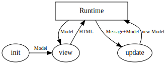

<!doctype html>
<html lang="en">
    <head>
        <meta charset="utf-8">
        <meta name="viewport" content="width=device-width, initial-scale=1.0, maximum-scale=1.0, user-scalable=no">

        <title>Elm Workshop</title>
        <link rel="stylesheet" href="./css/reveal.css">
        <link rel="stylesheet" href="./css/theme/black.css" id="theme">
        <link rel="stylesheet" href="./css/highlight/zenburn.css">
        <link rel="stylesheet" href="./css/print/paper.css" type="text/css" media="print">
          <link rel="stylesheet" href="./assets/custom.css">


    </head>
    <body>

        <div class="reveal">
            <div class="slides"><section  data-markdown><script type="text/template">
<link rel="stylesheet" href="https://use.fontawesome.com/releases/v5.0.13/css/all.css" integrity="sha384-DNOHZ68U8hZfKXOrtjWvjxusGo9WQnrNx2sqG0tfsghAvtVlRW3tvkXWZh58N9jp" crossorigin="anonymous">
<h1>Elm Workshop</h1>
</script></section><section  data-markdown><script type="text/template">
### What we will do today

1. Elm Syntax
2. The Elm Architecture
3. What you can do with it ?
4. Example : simple todo-list
</script></section><section  data-markdown><script type="text/template">
### Elm Syntax

<small>
Syntax is very minimalistic
</small>
```
-- Comment
{-
Multi-line comment
-}

-- Boolean
True  : Bool
False : Bool

42    : number  -- Int or Float depending on usage
3.14  : Float

'a'   : Char
"abc" : String
```</script></section><section  data-markdown><script type="text/template">
```
if key == 40 then
    n + 1

else
    n

case n of
  0 -> 1
  1 -> 1
  _ -> fib (n-1) + fib (n-2)
```
</script></section><section  data-markdown><script type="text/template">
```
-- create records
origin = { x = 0, y = 0 }
point = { x = 3, y = 4 }

-- access fields
origin.x == 0
point.x == 3

-- field access function
List.map .x [ origin, point ] == [ 0, 3 ]

-- update many fields
{ point | x = point.x + 1, y = point.y + 1 }
```
</script></section><section  data-markdown><script type="text/template">
<small>
Functions are the core elements of Elm.<br>
Functions have (optional) type annotations.<br>
They allow destructuring directly in the arguments.
</small>
```
hypotenuse : Float -> Float -> Float
hypotenuse a b =
  sqrt (square a + square b)

distance : (Float, Float) -> (Float, Float) -> Float
distance (a,b) (x,y) =
  hypotenuse (a - x) (b - y)

-- Anonymous functions
\a, b -> a + b
```</script></section><section  data-markdown><script type="text/template">
A few things to get used to in Elm :

- No implicit casts. Never.
- Data is immutable
- *Every function is a single statement*
</script></section><section  data-markdown><script type="text/template">
Custom data types are everything in Elm :
```
type Shape = Square Int | Rectangle Int | Circle Float

unit = Square 1
center = Circle 1.2
```
</script></section><section  data-markdown><script type="text/template">
These types are really easy to match on
```
area : Shape -> Float
area shape =
    case shape of
        Square side -> Int.toFloat(side^2)
        Rectangle a b -> Int.toFloat(a*b)
        Circle radius -> radius * 3.14
```

<small><i>Types are a huge part of any Elm part.<br>
They should be at the root of the app design and mirror business logic.</i></small>
</script></section><section  data-markdown><script type="text/template">
### The Elm Architecture
</script></section><section  data-markdown><script type="text/template">
<small>Elm is built around a `Update > View` cycle, with a single source of truth : the model.</small>

</script></section><section  data-markdown><script type="text/template">
Minimal Elm app
```
type Model = Int
type Msg = Increase | Decrease

init = 0
update message model =
    case message of
        Increase -> model + 1
        Decrease -> model - 1
view model =
    div [] [ button [ onClick Increase ] [ text "+" ]
           , text (String.fromInt model)
           , button [ onClick Decrease ] [ text "-" ] ]
```
<small>Let's pick that example apart.</small>
</script></section><section  data-markdown><script type="text/template">
# What can you do with it ?
</script></section><section  data-markdown><script type="text/template">
Any webapp of course, but there are a few niceties :
- No runtime errors. None. Nada. нет.
- Time travelling debugger with explorable state
- Native, really easy websockets
- Amazing packages like elm-ui to separate layout from style
- Worst case scenario : controlled, typed, interop with JS
</script></section><section  data-markdown><script type="text/template">
Other plus points :
- Vibrant community (elm-europe is held every year in Villejuif)
- Actively developed (0.19 came out in 09/2018)
</script></section><section  data-markdown><script type="text/template">
Problems :
- Actively developed (0.19 broke a few things)
- Not as rich an ecosystem as JS, esp. on UI side
</script></section><section  data-markdown><script type="text/template">
# TODO List App
</script></section><section  data-markdown><script type="text/template">
First, the most basic skeleton
```
module Main exposing (main)

import Browser

main = Browser.sandbox {init=init, view=view, update=update}
```

<small>To follow along, the easiest is using <a>https://ellie-app.com</a></small>
</script></section><section  data-markdown><script type="text/template">
Decide on the model 
```
type Model = ?

init : Model
init = ?
```
</script></section><section  data-markdown><script type="text/template">
Decide on a few basic actions and their effect on the model
```
type Msg = ?

update : Msg -> Model -> Model
update = ?
```
</script></section><section  data-markdown><script type="text/template">
And render a basic model
```
import Html exposing (..)


view : Model -> Html
view = ?
```
</script></section><section  data-markdown><script type="text/template">
Example at [https://exenon.github.io/elm-presentation/assets/example.html](https://exenon.github.io/elm-presentation/assets/example.html)

Code at [https://github.com/eXenon/elm-presentation](https://github.com/eXenon/elm-presentation/blob/master/example.elm)
</script></section></div>
        </div>

        <script src="./lib/js/head.min.js"></script>
        <script src="./js/reveal.js"></script>

        <script>
            function extend() {
              var target = {};
              for (var i = 0; i < arguments.length; i++) {
                var source = arguments[i];
                for (var key in source) {
                  if (source.hasOwnProperty(key)) {
                    target[key] = source[key];
                  }
                }
              }
              return target;
            }

            // Optional libraries used to extend on reveal.js
            var deps = [
              { src: './lib/js/classList.js', condition: function() { return !document.body.classList; } },
              { src: './plugin/markdown/marked.js', condition: function() { return !!document.querySelector('[data-markdown]'); } },
              { src: './plugin/markdown/markdown.js', condition: function() { return !!document.querySelector('[data-markdown]'); } },
              { src: './plugin/highlight/highlight.js', async: true, callback: function() { hljs.initHighlightingOnLoad(); } },
              { src: './plugin/zoom-js/zoom.js', async: true },
              { src: './plugin/notes/notes.js', async: true },
              { src: './plugin/math/math.js', async: true }
            ];

            // default options to init reveal.js
            var defaultOptions = {
              controls: true,
              progress: true,
              history: true,
              center: true,
              transition: 'default', // none/fade/slide/convex/concave/zoom
              dependencies: deps
            };

            // options from URL query string
            var queryOptions = Reveal.getQueryHash() || {};

            var options = {"transition":"none","slideNumber":true};
            options = extend(defaultOptions, options, queryOptions);
        </script>


        <script>
          Reveal.initialize(options);
        </script>
    </body>
</html>
